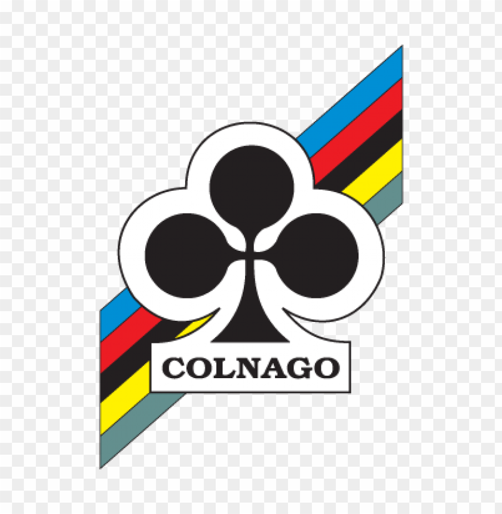

Colnago Ernesto & C. S.r.l. or Colnago is a manufacturer of high quality road-racing bicycles founded by Ernesto Colnago near Milano in Cambiago, Italy. It remained a family-controlled firm until May 4, 2020, when it was announced that the UAE-based investment company, Chimera Investments LLC, had acquired a majority of the Colnago shares from Ernesto Colnago, although the headquarters will remain located in Italy after the acquisition. Instead of following his family's farming business, Ernesto Colnago chose to work in the cycle trade, and was apprenticed first to Gloria Bicycles at the age of 13, and subsequently taking up road racing. After a bad crash ended his racing career, he began subcontracting for Gloria, and opened his own shop in 1954, building his first frames the same year. While building frames, he remained much in demand as a racing mechanic. He was second mechanic on the Nivea team Giro d'Italia under Faliero Masi in 1955, eventually being employed as head mechanic for the Molteni team of Belgian cycling legend Eddy Merckx in 1963.the company first became known for high quality steel framed bicycles suitable for the demanding environment of professional racing, and later as one of the more creative cycling manufacturers responsible for innovations in design and experimentation with new and diverse materials including carbon fiber, now a mainstay of modern bicycle construction.